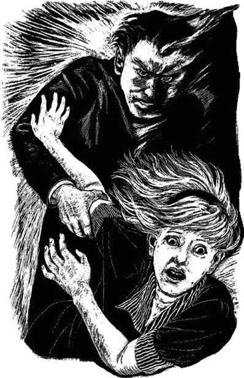

14
Listen to Part 1:

Những khách hàng đặc biệt
‘Những chiếc nhẫn kim cương thì sao?’ một giọng nói vang lên.
Là Dave Slatin. Hắn đang cười.
‘Tôi để cửa mở cho cô đấy,’ hắn nói. ‘Tôi muốn cô vào căn phòng này vào sáng nay!’
Anna sợ hãi, nhưng cố giấu đi nỗi sợ.
‘Anh chưa tìm thấy những viên kim cương,’ Dave nói tiếp.
Anna nhớ lại những chiếc nhẫn kim cương của Greta Gordon. Liệu chúng cũng có trong căn phòng này không?
‘Này,’ Dave nói. Hắn bước vào phòng và nhặt một chiếc hộp cũ. Hắn lấy ra những chiếc nhẫn và ném chúng lên bàn.
‘Chúng không phải của anh,’ Anna nói. ‘Chúng thuộc về Greta Gordon.’
‘Chúng thuộc về tôi chứ,’ Dave cười khẩy. ‘Cô ấy đã tặng chúng cho tôi.’
Listen to Part 2:
‘Nhưng tại sao?’ Anna hỏi. ‘Tại sao? Tại sao Greta Gordon tặng anh những viên kim cương đó? Còn cả số tiền này. Ai đã đưa anh tiền?’
‘Khách hàng đặc biệt của tôi!’ Dave nói. ‘Khách hàng đặc biệt của tôi đã cho tôi tiền. Giờ nó thuộc về tôi.’
‘Mike Bailey và ông Riseman đã đưa anh toàn bộ số tiền này sao?’ Anna hỏi.
‘Đúng vậy,’ Dave đáp. ‘Cô chỉ gặp một số chứ chưa gặp hết Khách hàng đặc biệt của tôi đâu.’
‘Nhưng tại sao họ lại đến đây?’ Anna hỏi tiếp.
‘Những người này đến đây để tôi giúp đỡ,’ Dave Slatin trả lời. ‘Tôi giúp họ và họ trả tiền cho tôi.’
‘Nhưng anh giúp họ như thế nào?’ Anna hỏi.
Dave Slatin cầm lấy con búp bê xinh đẹp bị gãy tay.
‘Cô còn nhớ Joanna Leigh không?’ hắn hỏi Anna.
Anna nghĩ một lúc.
Listen to Part 3:
‘Joanna Leigh ư?’ cô nói. ‘Vâng, tất nhiên là tôi còn nhớ. Cô ấy là diễn viên bị gãy tay. Greta Gordon đã thế chỗ cô ấy.’
‘Đúng vậy,’ Dave Slatin nói. ‘Con búp bê này chính là Joanna Leigh.’
Anna càng thêm sợ hãi. Dave Slatin là loại người gì vậy?
Dave Slatin chỉ vào một bức ảnh bị xé trong quyển sách về bóng đá. ‘Đây là ai, Anna?’ hắn hỏi.
Anna nhớ ra khuôn mặt đó. Cô đã thấy nó trên TV.
‘Brian Thomas,’ cô trả lời. ‘Anh ấy là thủ môn.’
‘Anh đã từng là thủ môn,’ Dave Slatin nói.
Bấy giờ, Anna vô cùng hoảng sợ. Dave Slatin là một kẻ độc ác.
Dave Slatin tiến đến gần Anna. Hắn cầm chiếc máy bay bị hỏng.
‘Còn cái này thì cô nghĩ là gì?’ hắn hỏi Anna.
Listen to Part 4:
Anna biết câu trả lời, nhưng cô quá sợ nên không dám nói.
Dave Slatin nắm chặt lấy cánh tay Anna. Anna cố giãy ra. Dave Slatin cười và giữ Anna chặt hơn.
‘Nghe này, Anna,’ hắn nói nhỏ nhẹ. ‘Anh muốn em. Anh cần em. Cưới anh, Anna. Đừng lấy Peter. Cưới anh.’

Dave Slatin nắm chặt lấy cánh tay Anna.
‘Không, không,’ cô hét lên. ‘Buông tôi ra. Buông tôi ra.’
‘Nhưng này, Anna, em vẫn chưa hiểu sao,’ Dave Slatin nói. ‘Anh có năng lực kỳ lạ. Anh có thể cho em mọi thứ em muốn.’
Hắn nhìn vào mắt Anna. ‘Con anh sẽ thừa hưởng năng lực đó,’ hắn nói tiếp. ‘Anh sẽ cho em tiền và kim cương. Còn em, Anna, em sẽ sinh cho anh những đứa con.’
Lúc này, Anna đã hoảng sợ tột độ. Cô đá rất mạnh vào Dave Slatin và hắn phải buông tay cô ra. Anna nhanh chân chạy ra khỏi phòng Đơn hàng đặc biệt, qua phía trước cửa hàng và chạy ra đường phố. Cô chạy một mạch về nhà.
Mục lục
- Bìa
- Trang tiêu đề
- Trang bản quyền
- Mục lục
- Nhân vật trong truyện
- 1. Người lạ ở Woodend
- 2. Cuộc họp làng
- 3. Cửa hàng góc phố
- 4. Vị khách tuyệt đẹp
- 5. Một trang báo ‘Tin tức phim’
- 6. Một nụ hôn vội
- 7. Một đơn đặt hàng đặc biệt khác
- 8. Trận bóng đá
- 9. Một kỳ cuối tuần bí mật
- 10. Một cuộc cãi vã
- 11. Arthur Riseman
- 12. Anna chờ đợi tin tức
- 13. Phòng đơn đặt hàng đặc biệt
- 14. Những khách hàng đặc biệt
- 15. Ngày 31 tháng 10
- Điểm cần hiểu